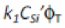
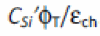

Model Equations
Internal Parameters Including Temperature Dependencies
Transistor Temperature
As in UTSOI1, a temperature node is used to compute the elevation of the channel temperature with respect to the circuit temperature due to self-heating when the SWSHE flag is set to 1 (see paragraph 4.9 for details). This temperature elevation is given by DTC. The channel temperature TKC is given by:
Local Process Parameters
Interface Coupling Internal Parameters
Drain Induced Barrier Lowering Internal Parameters
Backplane Internal Parameters
Since the backplane is located under the buried oxide of the device, it is assumed that its temperature is that of the environment. Therefore, the self-heating effect is not included for the corresponding parameters and temperature. TKD is considered.
Quantum Mechanical Correction Internal Parameters
Mobility Internal Parameters
Series Resistance Internal Parameters
Velocity Saturation Internal Parameters
Note the presence of the FACTUO pre-factor and of STBET in the temperature exponent. This contributes to decouple velocity saturation parameters from low longitudinal field mobility ones, and makes in particular STTHESAT the temperature exponent of the saturation velocity itself.
Channel Length Modulation Internal Parameters
Gate Current Internal Parameters
Gate Induced Drain/Source Leakage (GIDL/GISL) Internal Parameters
Charge Model Internal Parameters
Self-heating Internal Parameters
Noise Model Internal Parameters
Terminal Voltage Conditioning
The input voltages used in the model are VGS, VDS, and VSB in nMOSFET and positive VDS configuration (that is, sign of external voltages is reversed for pMOSFET, and source/drain are interchanged in case of negative VDS), from which VSD, VGD, VDB, and VGB are computed. Then, dimensionless quantities are defined from these voltages.
Voltages for Channel Current and Intrinsic Charge Models
Voltages for Overlap Currents and Charges
Backplane Depletion
Depletion of the backplane is accounted for through the calculation of an effective backplane bias xg2eff. If backplane depletion is not activated (that is, SWSUBDEP=0), then xg2eff is given by:
If backplane depletion is activated (that is, SWSUBDEP=1), then the computation of xg2eff uses a PSP-like surface potential calculation sequence. This computation is based on the following analogy: the backplane is considered as the channel of a bulk MOSFET, where gate electrode is the front gate and where gate oxide capacitance is equal to the front gate oxide capacitance in series with the channel film capacitance and the buried oxide capacitance. The detailed calculation of xg2eff is:
Channel Current
Since the calculation of the MOSFET channel current is completely symmetrical between front and back interfaces, it is valid not only for Ultra-Thin Body and Buried oxide FDSOI transistors, but also for Independent Double Gate MOSFETs.
Quantum Mechanical Correction in Subthreshold Regime
To account properly for quantum confinement when the effect is activated (QMC>0), the effective geometry of the device is modified. In the first correction detailed here, it is assumed that there is no charge in the channel. Therefore, this correction is valid only in the subthreshold regime. A second correction will be brought afterwards to account properly for quantum confinement also in the strong inversion regime.
Interface Coupling in Subthreshold Regime
Inversion Charge and Related Quantities on Source Side
First, the gate charge density at the source side q1S, normalized to 
, is computed by a call to the CHARGE_DENSITY function.
Then, inversion and back gate charge densities, normalized to  respectively, are calculated:
respectively, are calculated:
else if Ae1Sk1q1s< 0.9k12q1S2(k1q1s+ fqctS)
Finally, some required quantities, including the drift electrostatic potential, are computed:
Mobility Attenuation and Series Resistance at Source Side
Front and back transverse effective fields, normalized to  .
Non-universality correction factor:
Total mobility degradation term, including high field mobility effect:
Drain Saturation Voltage, Including Velocity Saturation Effect
Derivative of inversion charge versus drift potential at the onset of saturation:
Normalized saturation and effective drain voltages:
Inversion charge and Related Quantities at Drain Side
Gate charge density at drain side:
Then, inversion and back gate charge densities, normalized to respectively, are calculated:
else if Ae1Dk1q1D < 0.9k12q1D2(k1q1D+fqctD):
Finally, some required quantities, including the drift electrostatic potential, are computed:
Mid-Point Inversion Charge
Mobility Attenuation and Series Resistance
Front and back transverse effective fields at drain side, normalized to  .
.
Non-universality correction factor:
Total mobility degradation term, including high field mobility effect:
Drain Saturation Voltage, Including Velocity Saturation Effect
Derivative of inversion charge versus drift potential at the onset of saturation.
Normalized saturation and effective drain voltages
Inversion Charge and Related Quantities on Drain Side
Gate charge density at drain side:
Then, inversion and back gate charge densities, normalized to  , respectively, are calculated:
, respectively, are calculated:
else if Ae1Dk1q1D < 0.9k12q1D2(k1q1D + fqctD)
Next, some required quantities, including the drift electrostatic potential, are computed:
Mid-point Inversion Charge
Mobility Attenuation and Series Resistance
Front and back transverse effective fields at drain side, normalized to  .
.
Mid-values of surface and effective fields:
Total mobility degradation term, including high field mobility effect:
Channel Length Modulation
Velocity Saturation
Quantum Confinement
Channel Current
Gate Current, Intrinsic Charges and Overlap Related Variables
Effective Gate Charge at Front and Back Interfaces
Surface Potential and Gate Dielectric Voltage Drop in Gate-Source Overlap Region
Surface Potential and Gate Dielectric Voltage Drop in Gate-Drain Overlap Region
Gate Current
Gate current calculation is not performed when the SWIGATE flag is set to 0.
Gate-to-Source Overlap Component
Gate-to-Drain Overlap Component
Gate-to-Channel Component
Source/Drain Partitioning of Gate-to-Channel Current
Gate-to-Source and Gate-to-Drain Total Currents
Gate Induced Drain/Source Leakage (GIDL/GISL)
Gate Induced Source Leakage
Gate Induced Drain Leakage
Charge Model
Quantum Mechanical Corrections
Intrinsic Charge Model
Parasitic Charges
Outer fringe and overlap charges
Drain-to-source direct coupling
Substrate Extrinsic Charge Model
Self-Heating
A temperature node named Tnode is used to compute the channel temperature elevation induced by the self-heating effect.
Noise Model
Channel Thermal Noise
Induced Gate Noise
Induced gate noise and its correlation with drain thermal noise are computed only when the SWIGN flag is set to 1.
The gate induced noise current is finally partitioned between the gate-source and the gate-drain branches, with a VDS dependent fraction equal to , respectively. The noise currents in these two branches are thus perfectly correlated and correspond to the following spectral densities:
Drain and Gate Thermal Noise Correlation
Verilog-A Implementation of Induced Gate Noise and Correlation
Since there is no noise function with frequency dependence suitable for the induced gate noise in Verilog-A, an internal node NSIG linked to the ground through a parallel RC circuit is used. The currents in the different branches are given by:
The noise current in the gate-source and gate-drain branches is obtained by:
A variable cigid is then defined to obtain the correct correlation between the drain thermal noise current and the gate induced one:
The channel thermal noise current is finally given as the sum of an uncorrelated part and a correlated one:
Channel Flicker Noise
Shot Noises
Total Current and Charges
Total currents in the branches and the total node charges are obtained as follows:
Static Currents
Total Charges
Dynamic Currents
Return to top